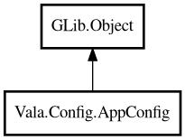

AppConfig
Object Hierarchy:

Description:
public class AppConfig : Object
Unified application configuration from file, environment, and CLI.
Precedence order is `cli > env > file > fallback`.
Example:
var cfg = AppConfig.load ("myapp")
.withEnvPrefix ("MYAPP_")
.withCliArgs (args);
int port = cfg.getInt ("port", 8080);
Content:
Static methods:
Creation methods:
Methods:
- public bool getBool (string key, bool fallback = false)
Returns bool value or fallback on missing/parse failure.
- public Duration getDuration (string key, Duration fallback)
Returns duration value or fallback on missing/parse failure.
- public int getInt (string key, int fallback = 0)
Returns int value or fallback on missing/parse failure.
- public string getString (string key, string fallback = "")
Returns string value or fallback.
- public string require (string key)
Returns required string value.
- public string sourceOf (string key)
Returns source name of resolved value.
- public AppConfig withCliArgs (string[] args)
Parses CLI args and stores key-value overrides.
- public AppConfig withEnvPrefix (string prefix)
Sets environment variable prefix.
Inherited Members:
All known members inherited from class GLib.Object
- @get
- @new
- @ref
- @set
- add_toggle_ref
- add_weak_pointer
- bind_property
- connect
- constructed
- disconnect
- dispose
- dup_data
- dup_qdata
- force_floating
- freeze_notify
- get_class
- get_data
- get_property
- get_qdata
- get_type
- getv
- interface_find_property
- interface_install_property
- interface_list_properties
- is_floating
- new_valist
- new_with_properties
- newv
- notify
- notify_property
- ref_count
- ref_sink
- remove_toggle_ref
- remove_weak_pointer
- replace_data
- replace_qdata
- set_data
- set_data_full
- set_property
- set_qdata
- set_qdata_full
- set_valist
- setv
- steal_data
- steal_qdata
- thaw_notify
- unref
- watch_closure
- weak_ref
- weak_unref